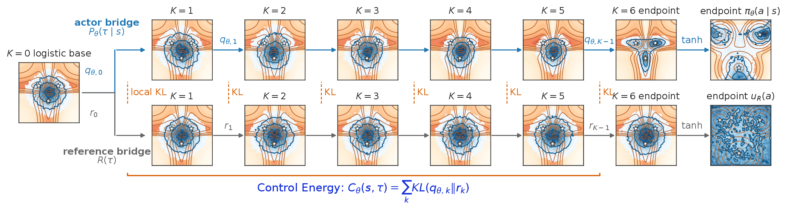
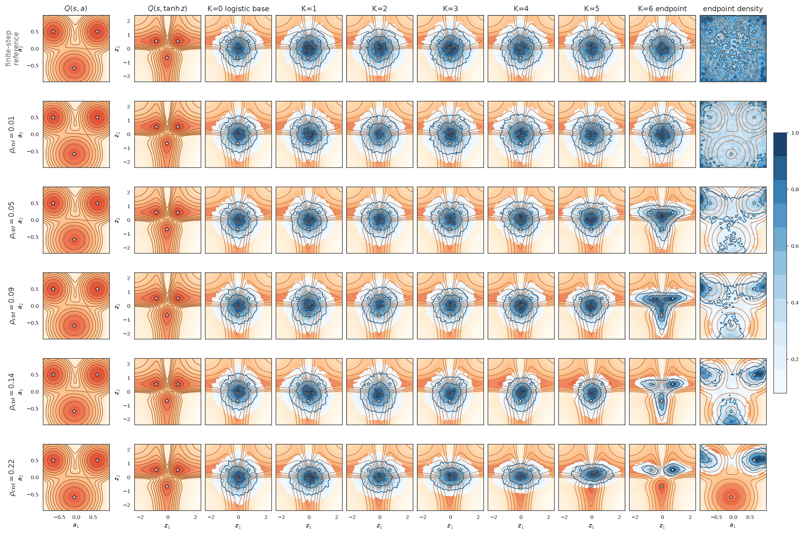
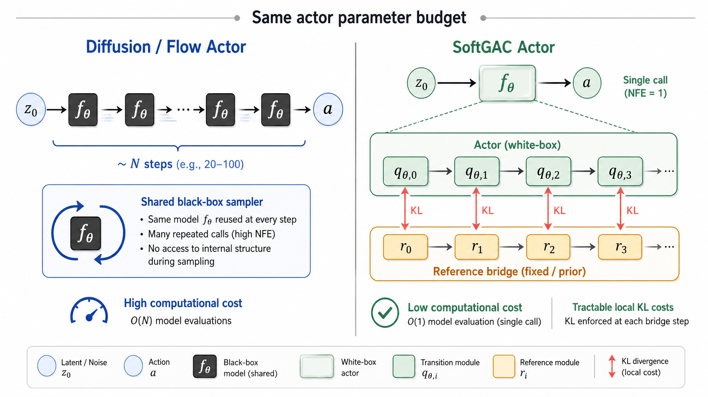
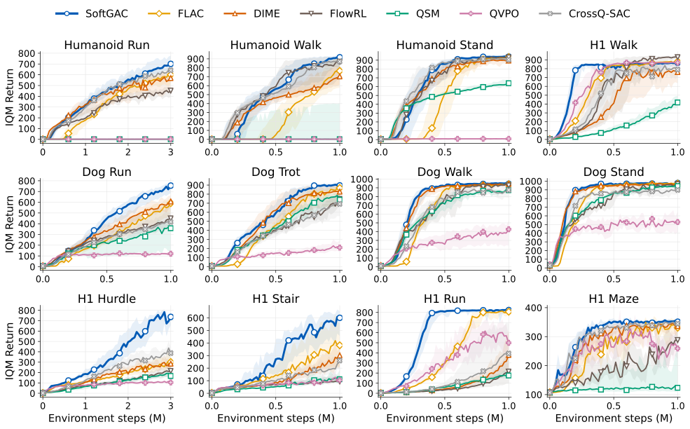
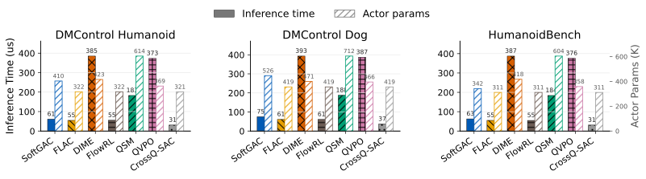
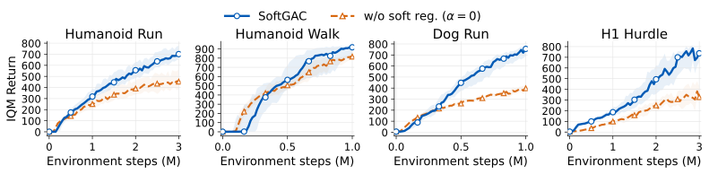
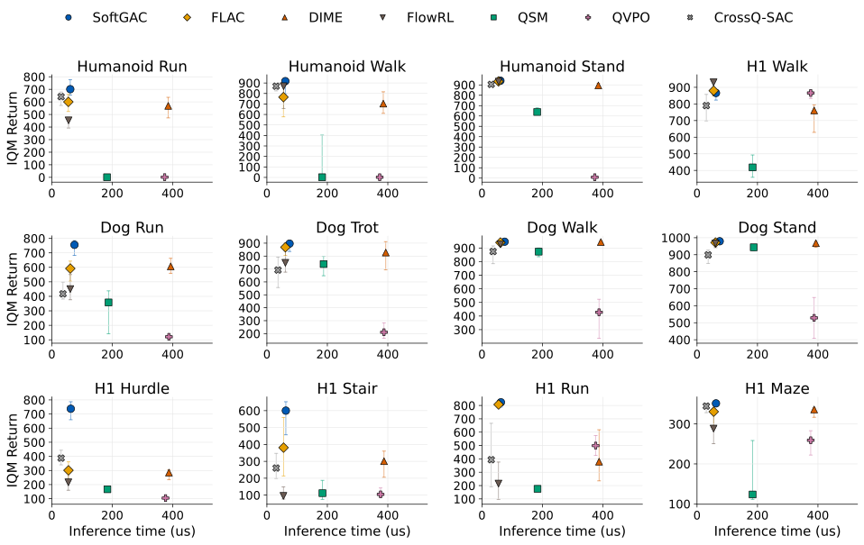

Rich action laws
Latent generation can model multi-peak, non-Gaussian policies that unimodal Gaussian actors miss.
SoftGAC: Generative Actor-Critic with Soft Bridge Policies
SoftGAC keeps the multimodal power of latent generative policies, replaces endpoint entropy estimates with analytical path-wise soft regularization, and uses a single stochastic forward pass to keep action generation cheap while aiming for higher returns, not just faster inference.
Diffusion, score, and flow policies are attractive because their action distributions can be multimodal and highly non-Gaussian. That expressiveness is exactly what a diagonal Gaussian actor struggles to provide in contact-rich, high-dimensional control.
But MaxEnt RL also wants a real soft objective, and online actor-critic wants action generation to stay cheap during both environment interaction and policy updates. Existing generative actors often give up one demand in this bargain: softness becomes a bound, estimator, or proxy; cheapness becomes inference-only; or performance drops when the sampler is shortened.
Latent generation can model multi-peak, non-Gaussian policies that unimodal Gaussian actors miss.
Softness should be optimized as a tractable density-based regularizer, not as a loose surrogate.
High NFE samplers pay in deployment latency, BPTT depth, activation memory, and actor-update time.
The goal is not to merely match high-NFE generative actors, but to outperform them with far fewer evaluations.
A generative actor may be easy to sample from while its marginal action density is unavailable: every terminal action hides an integral over latent variables and generation paths.
One-step and few-step policies can reduce deployment cost, but they often inherit indirect entropy handling, extra training complexity, or the familiar tradeoff where speed arrives with weaker returns.
Instead of estimating endpoint entropy, it regularizes the full latent generation path against a high-entropy reference process.
The actor is expressive because it is an implicit sampler: it starts from noise, follows a short latent bridge, and outputs an action. Many internal paths can land in different action modes.
The difficulty is softness: the endpoint action density is hidden, so the usual SAC entropy term is not directly available. SoftGAC lifts the soft objective to the sampled path, while preserving the SAC endpoint target in the marginal action distribution.
The actor can keep the multimodal behavior of latent generative policies without exposing a closed-form endpoint density.
Regularize the generated path against a high-entropy reference bridge, instead of estimating endpoint entropy after the fact.
The path-space lift preserves the MaxEnt endpoint target; the extra regularization shapes how the action is reached.

Think of the reference bridge as a broad, high-entropy way to move through latent space. The actor can spend control energy to bend those paths toward actions that the critic values.
A small budget keeps many routes alive; a larger budget concentrates probability near high-value modes. This is the visual intuition behind being expressive and soft at the same time.

For Gaussian bridge transitions, the finite-step path KL factors into closed-form local terms. No endpoint entropy estimator, no entropy bound, no proxy objective.
The actor is still stochastic latent generation. Multiple bridge paths can reach different terminal action modes while value guides the transport.
The sampled loss \(\alpha \mathcal{C}_\theta(s,\tau) - Q(s,T(z_K))\) is a reverse-KL projection direction toward the ideal soft bridge.
The comparison keeps actor parameter counts in the same range. SoftGAC is not a larger network hiding sampler cost in parameters; its advantage comes from how the actor is structured and evaluated.
Diffusion and flow policies spend the same actor network repeatedly across denoising or refinement steps. SoftGAC spends a comparable actor budget once, through a structured bridge whose local transitions expose the path KL used by the soft objective.

The experiments compare SoftGAC against diffusion and flow-matching actor-critic baselines under a unified JAX codebase, shared main critic update, comparable actor parameter budgets, and 8 seeds.
Across the full 12-task suite, the one-pass bridge actor is not merely competitive with high-NFE policies. The hard locomotion and obstacle tasks make the compute-return gap especially clear.




Expressiveness asks whether the actor can represent the action distribution the task actually needs. Softness asks whether the stochasticity is part of the objective rather than a post-hoc exploration trick. Cheapness asks whether computation stays small during both training and deployment; better asks whether lower cost can come with higher returns, not just matching the slower actor.
SoftGAC ties the four goals to one structural choice: a short stochastic bridge actor. The path keeps generation expressive, the path-space objective keeps softness principled, one sampled pass keeps compute cheap, and the experiments show the result can be better rather than merely faster.
Ke He, Le He, Shunpu Tang, Yafei Wang, and Lisheng Fan. Code is available with the paper.
@article{he2026generative,
title = {Generative Actor-Critic with Soft Bridge Policies},
author = {He, Ke and He, Le and Tang, Shunpu and Wang, Yafei and Fan, Lisheng},
journal = {arXiv preprint arXiv:2605.08733},
year = {2026},
archivePrefix = {arXiv},
eprint = {2605.08733},
url = {https://arxiv.org/abs/2605.08733}
}